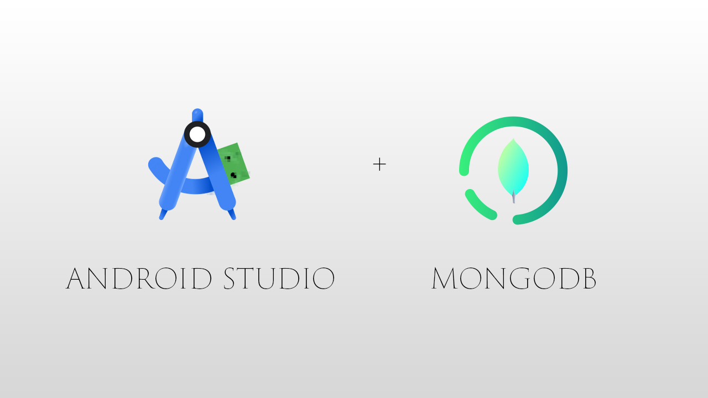

EvenTrack Artifact
Mobile App for Managing Events & Notifications
Code Review
This walkthrough highlights the Android logic, Firebase integration, and how permission handling and external testing methods were applied. It also demonstrates the use of SensorManager and activity lifecycle optimizations.
EvenTrack Code Review
Original Artifact
The original version of EvenTrack was a static prototype UI with minimal login functionality or real-time event management. It served primarily to demonstrate layout ideas, screen transitions, and gaining hands-on experience of building a mobile application from top to bottom.
Initial UI Mocks


Enhancement
The enhancement I've given EvenTrack was giving the application a complete UI redesign and transforming the app's look and feel into a more modern,visually appealing, and user-friendly experience. This redesign focuses on improving usability, visual consistency, and overall app flow. Additionally, I integrated Firebase Authentication for secure user login, and leveraged Firestore to enable real-time event storage and updates. Permission handling for SMS notifications was implemented to enhance user engagement, while activity lifecycle optimizations ensure efficient app performance on Android devices.


Event Tracking App w/ Redesigned UI
Future Enhancements
Looking ahead, I plan to connect EvenTrack to a MongoDB database to support greater scalability, flexible data modeling, and improved performance for complex queries. This transition will enable more robust backend functionality and better data management. Additionally, I aim to integrate push notifications using Firebase Cloud Messaging for timely event alerts, introduce calendar synchronization for seamless scheduling, and implement event sharing between users to foster collaboration. These future enhancements will elevate EvenTrack into a comprehensive productivity and event management tool.
Future Roadmap w/ MongoDB Integration & Feature Expansion